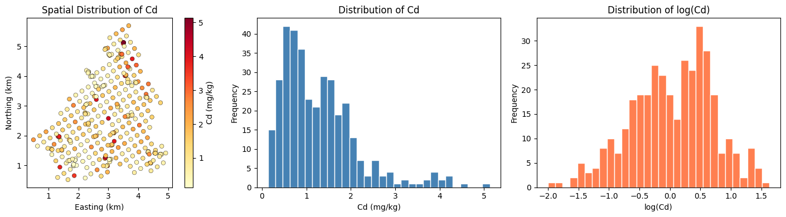
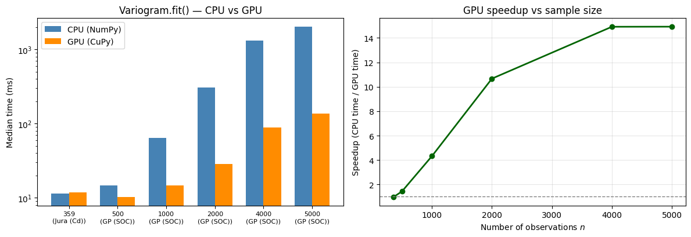
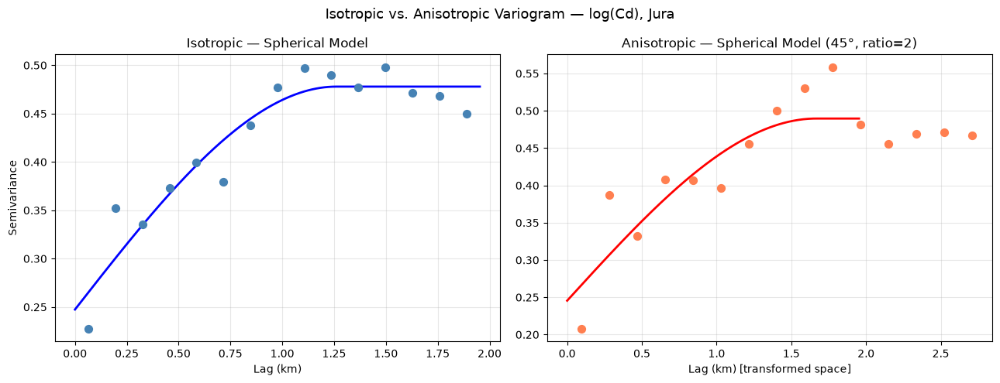

Geostatistics is the branch of spatial statistics that studies spatially correlated phenomena. At its heart lies the variogram (or semivariogram), a function that quantifies how spatial correlation decays with distance. Before any spatial prediction (kriging, simulation) can be performed, a variogram must be computed from data and a theoretical model must be fitted to it.
This tutorial covers the full variogram-modeling workflow using PyGStat and the classic Jura geochemical dataset. The same cells run on CPU (NumPy) or GPU (CuPy): a one-time kernel probe sets USE_GPU, and every Variogram call below passes use_gpu=USE_GPU.
Step
What we do
Empirical estimation
Compute the experimental variogram using Matheron, Cressie–Hawkins, and Dowd estimators
Model fitting
Fit spherical, exponential, gaussian, Matérn, stable, and cubic theoretical models
Anisotropy
Detect and model directional dependence
Model selection
Rank models by residual sum of squares and AIC
CPU / GPU
Auto-detect a usable CuPy GPU; fall back to CPU when the card cannot run a kernel
By the end, you will have a production-ready variogram model ready for kriging interpolation.
2. What is a Variogram?
The semivariogram (commonly called the variogram) measures the average squared difference between pairs of observations separated by a lag distance \(h\):
where \(Z(\mathbf{x})\) is the random field at location \(\mathbf{x}\) and \(\mathbf{h}\) is the separation vector.
Under the intrinsic stationarity assumption, \(\gamma(h)\) depends only on the lag vector \(\mathbf{h}\), not on the absolute position \(\mathbf{x}\).
2.1 Key Parameters
Parameter
Symbol
Description
Nugget
\(C_0\)
Variance at lag = 0; represents micro-scale variation and measurement error
Sill
\(C_0 + C\)
Total variance; the variogram asymptote
Range
\(a\)
Lag distance at which the variogram reaches the sill; beyond this, observations are uncorrelated
Partial sill
\(C\)
Structurally explained variance: sill − nugget

### 2.2 How the Variogram Works
1. **Pair all observations** and compute their separation distance $h_{ij} = \|\mathbf{x}_i - \mathbf{x}_j\|$.
2. **Bin pairs** into lag classes $[h_k, h_{k+1})$.
3. **Apply an estimator** within each bin to get the experimental variogram value $\hat{\gamma}(h_k)$.
4. **Fit a theoretical model** $\gamma(h; \boldsymbol{\theta})$ to the experimental cloud by weighted least squares.
5. Use the fitted model in **kriging** to interpolate at unsampled locations.
***
## 3. Types of Variograms
### 3.1 Theoretical Model Functions
PyGStat implements six standard permissible variogram models:
| Model | Formula | Properties |
|-------|---------|------------|
| **Spherical** | $C_0 + C\left[\frac{3h}{2a} - \frac{h^3}{2a^3}\right]$ for $h \le a$; $C_0+C$ otherwise | Finite range; linear near origin; most commonly used |
| **Exponential** | $C_0 + C\left[1 - e^{-h/a}\right]$ | Infinite range (practical range $\approx 3a$); linear near origin |
| **Gaussian** | $C_0 + C\left[1 - e^{-(h/a)^2}\right]$ | Very smooth spatial correlation; parabolic near origin |
| **Matérn** | $C_0 + C\left[1 - \frac{2^{1-\nu}}{\Gamma(\nu)}\left(\frac{\sqrt{2\nu}h}{a}\right)^\nu K_\nu\left(\frac{\sqrt{2\nu}h}{a}\right)\right]$ | Generalization; $\nu$ controls smoothness |
| **Stable** | $C_0 + C\left[1 - e^{-(h/a)^\alpha}\right]$ | $\alpha \in (0,2]$; reduces to exponential ($\alpha=1$) or Gaussian ($\alpha=2$) |
| **Cubic** | Polynomial; smooth, compact support | Smooth near origin; finite range |
### 3.2 Isotropic vs Anisotropic
- **Isotropic**: Spatial correlation depends only on lag *distance* $h = \|\mathbf{h}\|$, not direction.
- **Anisotropic (geometric)**: Spatial correlation is stronger in one direction than another. Modeled by an affine coordinate transformation (rotation + scaling) that converts the anisotropic space into an isotropic one.
Anisotropy is characterized by:
- **Angle** $\theta$: Principal direction of maximum continuity
- **Ratio** $r$: Ratio of the major range to the minor range ($\ge 1$)
***
## 4. Python Setup
### 4.1 CPU and GPU
PyGStat's `Variogram` computes the empirical (experimental) semivariogram on **CPU** (NumPy) or **GPU** (CuPy). Pass `use_gpu` as:
| Value | Behaviour |
|-------|-----------|
| `'auto'` (default) | GPU only when CuPy can run a kernel **and** the coordinates are already GPU-resident (a CuPy array or cuDF Series/DataFrame). NumPy input stays on CPU, so `'auto'` never surprises you with a host→device copy. |
| `True` | Force GPU for the empirical cloud. Warns and falls back to CPU if CuPy is missing or cannot run a kernel on this card. |
| `False` | Always CPU (NumPy/SciPy). |
This notebook probes the GPU once with `cupy_gpu_usable()` (a real op, not just `import cupy`) and stores the result in `USE_GPU`. Every `Variogram(...)` below passes `use_gpu=USE_GPU`, so the same cells run on a laptop CPU or a CUDA workstation without edits.
Two caveats:
- **Model fitting** (nugget / sill / range via SciPy's optimizer) always runs on the CPU.
- The **Matérn** model always *evaluates* on CPU (SciPy Bessel functions have no CuPy equivalent). The empirical cloud is still GPU-accelerated when `USE_GPU` is true.
Install CuPy with `pip install pygstat[gpu]` (CUDA 11) or `pip install cupy-cuda12x` for CUDA 12.
Section 6 times `Variogram.fit()` on both backends so you can see when the GPU is worth using.
::: {#setup-code .cell quarto-private-1='{"key":"execution","value":{"iopub.execute_input":"2026-09-10T00:14:45.577109Z","iopub.status.busy":"2026-09-10T00:14:45.576803Z","iopub.status.idle":"2026-09-10T00:14:53.450217Z","shell.execute_reply":"2026-09-10T00:14:53.449031Z"}}' execution_count=1}
``` {.python .cell-code}
%matplotlib inline
import sys, os, warnings, subprocess, importlib.util
warnings.filterwarnings("ignore")
def _ensure_package(pip_name, import_name=None):
"""Install *pip_name* if it cannot be imported."""
name = import_name or pip_name
if importlib.util.find_spec(name) is None:
print(f"Installing {pip_name} ...")
subprocess.check_call([sys.executable, "-m", "pip", "install", pip_name, "-q"])
print(f"{pip_name:12s} installed")
_ensure_package("numpy")
_ensure_package("pandas")
_ensure_package("matplotlib")
_ensure_package("scipy")
# pygstat: prefer the local source tree when running from Tutorial/
_REPO_ROOT = os.path.abspath("..")
sys.path.insert(0, os.path.join(_REPO_ROOT, "src"))
if importlib.util.find_spec("pygstat") is None:
print("Installing pygstat from local source ...")
subprocess.check_call(
[sys.executable, "-m", "pip", "install", "-e", f"{_REPO_ROOT}[plot]", "-q"]
)
print(f"{'pygstat':12s} installed")
import numpy as np
import pandas as pd
import matplotlib.pyplot as plt
import matplotlib.ticker as ticker
from scipy.stats import skew
import pygstat
from pygstat import Variogram
from pygstat.core.variogram_models import MODEL_FUNCS
from pygstat.utils.backend import CUPY_AVAILABLE, cupy_gpu_usable
print(f"pygstat version : {pygstat.__version__}")
print(f"NumPy : {np.__version__}")
print(f"pandas : {pd.__version__}")
print(f"matplotlib : {__import__('matplotlib').__version__}")
print(f"scipy : {__import__('scipy').__version__}")
# ── CPU / GPU dispatch ────────────────────────────────────────────────────────
# cupy_gpu_usable() runs a real kernel (not just `import cupy`). Older cards can
# import CuPy and still fail at compile time; those stay on CPU.
USE_GPU = cupy_gpu_usable()
if USE_GPU:
import cupy as cp
print(f"CuPy : {cp.__version__}")
try:
name = cp.cuda.runtime.getDeviceProperties(0)["name"]
if isinstance(name, bytes):
name = name.decode()
print(f"GPU : {name}")
except Exception:
print("GPU : available")
print("Backend : GPU (CuPy) — empirical variogram on GPU")
else:
if CUPY_AVAILABLE:
import cupy as cp
print(f"CuPy : {cp.__version__} (installed, but cannot run a kernel on this GPU/CUDA setup)")
else:
print("CuPy : not installed (pip install pygstat[gpu] or cupy-cuda12x)")
print("Backend : CPU (NumPy)")
print(f"use_gpu : {USE_GPU}")
numpy installed
pandas installed
matplotlib installed
scipy installed
pygstat installed
WARNING: All log messages before absl::InitializeLog() is called are written to STDERR
I0000 00:00:1789079512.886142 20681 cpu_feature_guard.cc:227] This TensorFlow binary is optimized to use available CPU instructions in performance-critical operations.
To enable the following instructions: AVX2 AVX512F FMA, in other operations, rebuild TensorFlow with the appropriate compiler flags.
pygstat version : 0.1.0
NumPy : 2.2.6
pandas : 2.3.3
matplotlib : 3.10.0
scipy : 1.15.3
CuPy : 14.0.1
GPU : NVIDIA GeForce RTX 2080 Ti
Backend : GPU (CuPy) — empirical variogram on GPU
use_gpu : True
:::
5. Load and Explore the Jura Dataset
The Jura dataset (Goovaerts, 1997) comprises 359 geochemical samples from the Swiss Jura region, recording concentrations (mg/kg) of heavy metals: Cd, Co, Cr, Cu, Ni, Pb, Zn.
We will model the variogram of Cd (cadmium) concentration, which typically shows strong spatial structure.
Cd summary:
count 359.000
mean 1.288
std 0.859
min 0.135
25% 0.653
50% 1.100
75% 1.680
max 5.129
Name: Cd, dtype: float64
Skewness : 1.472
Code
fig, axes = plt.subplots(1, 3, figsize=(15, 4))# Spatial scattersc = axes[0].scatter(df[x_col], df[y_col], c=z, cmap="YlOrRd", s=30, edgecolors="k", linewidths=0.3)plt.colorbar(sc, ax=axes[0], label=f"{target} (mg/kg)")axes[0].set_title(f"Spatial Distribution of {target}")axes[0].set_xlabel("Easting (km)"); axes[0].set_ylabel("Northing (km)")axes[0].set_aspect("equal")# Histogramaxes[1].hist(z, bins=30, color="steelblue", edgecolor="white")axes[1].set_title(f"Distribution of {target}")axes[1].set_xlabel(f"{target} (mg/kg)"); axes[1].set_ylabel("Frequency")# Log-transformed histogramlog_z = np.log(z +1e-6)axes[2].hist(log_z, bins=30, color="coral", edgecolor="white")axes[2].set_title(f"Distribution of log({target})")axes[2].set_xlabel(f"log({target})"); axes[2].set_ylabel("Frequency")plt.tight_layout()plt.show()print(f"\nlog({target}) skewness: {skew(log_z):.3f} (|skew| < 1 is preferable for variogram modeling)")# Use log-transformed values for variogram modeling (reduces skew)z_model = log_zprint("Using log-transformed Cd for variogram modeling.")

log(Cd) skewness: -0.248 (|skew| < 1 is preferable for variogram modeling)
Code
# Use log-transformed values for variogram modeling (reduces skew effect)z_model = log_zprint("Using log-transformed Cd for variogram modeling.")
Using log-transformed Cd for variogram modeling.
6. CPU vs GPU Timing
Section 4.1 showed how to select a backend. Here we measure how long Variogram.fit() takes on CPU (use_gpu=False, NumPy/SciPy) versus GPU (use_gpu=True, CuPy) - first on the Jura samples (\(n = 359\)), then on prefixes of the Great Plains soil-organic-carbon survey (data/gp_data_5000.csv, \(n\) up to 5{,}000).
The empirical (experimental) variogram is the GPU-accelerated step: it builds an \(n \times n\) pairwise-distance matrix. Theoretical-model fitting (nugget / sill / range) always runs on the CPU and is cheap once the lag cloud is in hand.
Two practical notes:
Small \(n\) (a few hundred points, like Jura) often shows little GPU gain: host→device copies and kernel-launch overhead dominate.
Larger \(n\) is where the GPU pays off, because pairwise distances scale as \(O(n^2)\).
Each timing is the median of three Variogram.fit() calls after a short GPU warmup so CUDA kernel compilation is not counted. If CuPy cannot run a kernel here, the GPU column is skipped and only CPU times are reported.
Code
import timeN_LAGS =15N_REPEATS =3df_gp = pd.read_csv("../data/gp_data_5000.csv")gp_coords = df_gp[["x", "y"]].to_numpy(dtype=float)gp_vals = df_gp["SOC"].to_numpy(dtype=float)SIZES = [len(coords), 500, 1000, 2000, 4000, len(gp_coords)]def _time_variogram(xy, values, use_gpu, repeats=N_REPEATS, warmup=True):"""Median wall time of Variogram.fit() over *repeats* runs."""if warmup: k =min(80, len(xy)) Variogram(xy[:k], values[:k], model="spherical", n_lags=10, use_gpu=use_gpu).fit()if use_gpu:import cupy as cp cp.cuda.Device(0).synchronize() times = [] last =Nonefor _ inrange(repeats): t0 = time.perf_counter() last = Variogram(xy, values, model="spherical", n_lags=N_LAGS, use_gpu=use_gpu).fit()if use_gpu:import cupy as cp cp.cuda.Device(0).synchronize() times.append(time.perf_counter() - t0)returnfloat(np.median(times)), lastprint(f"GPU usable : {USE_GPU}")print(f"Repeats : {N_REPEATS} (median wall time of Variogram.fit())")print(f"GP SOC : {len(gp_vals)} samples from data/gp_data_5000.csv")print()rows = []for n in SIZES:if n ==len(coords): xy, vals, label = coords, z_model, "Jura (Cd)"else: xy, vals = gp_coords[:n], gp_vals[:n] label ="GP (SOC)" cpu_t, v_cpu = _time_variogram(xy, vals, use_gpu=False) row = {"n": n, "dataset": label,"CPU (s)": cpu_t, "GPU (s)": np.nan,"speedup": np.nan, "match": "—", }if USE_GPU: gpu_t, v_gpu = _time_variogram(xy, vals, use_gpu=True) row["GPU (s)"] = gpu_t row["speedup"] = cpu_t / gpu_t row["match"] =bool(np.allclose( v_cpu.experimental, v_gpu.experimental, rtol=1e-5, equal_nan=True ))import cupy as cp cp.get_default_memory_pool().free_all_blocks() rows.append(row)df_bench = pd.DataFrame(rows)df_show = df_bench.copy()df_show["CPU (ms)"] = (df_show["CPU (s)"] *1000).round(1)df_show["GPU (ms)"] = (df_show["GPU (s)"] *1000).round(1)df_show["speedup"] = df_show["speedup"].map(lambda x: "—"if pd.isna(x) elsef"{x:.2f}×")print(df_show[["dataset", "n", "CPU (ms)", "GPU (ms)", "speedup", "match"]].to_string(index=False))fig, axes = plt.subplots(1, 2, figsize=(12, 4.2))n_vals = df_bench["n"].to_numpy()cpu_ms = df_bench["CPU (s)"].to_numpy() *1000gpu_ms = df_bench["GPU (s)"].to_numpy() *1000x = np.arange(len(n_vals))w =0.36axes[0].bar(x - w /2, cpu_ms, w, label="CPU (NumPy)", color="steelblue")if USE_GPU and np.isfinite(gpu_ms).all(): axes[0].bar(x + w /2, gpu_ms, w, label="GPU (CuPy)", color="darkorange")axes[0].set_xticks(x)axes[0].set_xticklabels( [f"{int(n)}\n({lab})"for n, lab inzip(n_vals, df_bench["dataset"])], fontsize=8,)axes[0].set_ylabel("Median time (ms)")axes[0].set_title("Variogram.fit() — CPU vs GPU")axes[0].legend()axes[0].set_yscale("log")if USE_GPU: axes[1].plot(n_vals, df_bench["speedup"], "o-", color="darkgreen", lw=2) axes[1].axhline(1.0, color="grey", ls="--", lw=1) axes[1].set_xlabel("Number of observations $n$") axes[1].set_ylabel("Speedup (CPU time / GPU time)") axes[1].set_title("GPU speedup vs sample size") axes[1].grid(True, alpha=0.3)else: axes[1].text(0.5, 0.5,"GPU not usable in this environment\nCPU-only timings shown", ha="center", va="center", transform=axes[1].transAxes, ) axes[1].set_axis_off()plt.tight_layout()plt.show()
GPU usable : True
Repeats : 3 (median wall time of Variogram.fit())
GP SOC : 5000 samples from data/gp_data_5000.csv
dataset n CPU (ms) GPU (ms) speedup match
Jura (Cd) 359 11.4 11.8 0.97× True
GP (SOC) 500 14.6 10.2 1.43× True
GP (SOC) 1000 63.7 14.7 4.32× True
GP (SOC) 2000 305.7 28.7 10.67× True
GP (SOC) 4000 1321.1 88.6 14.91× True
GP (SOC) 5000 2028.5 136.0 14.92× True

The experimental clouds from the two backends should match (match = True). On this workstation the Jura sample (\(n = 359\)) is too small for a meaningful GPU win; on the Great Plains SOC prefixes the \(O(n^2)\) pairwise distances dominate by \(n = 2{,}000\)–\(5{,}000\) and the GPU is several times faster. Use use_gpu=USE_GPU (as the rest of this notebook does) so the same cells run on a laptop CPU or a CUDA workstation without edits.
7. Empirical Variogram - Robust Estimators
The empirical (experimental) variogram is computed from data before fitting any theoretical model. PyGStat provides three estimators:
The Cressie–Hawkins estimator is a robust alternative to the classical Matheron estimator for computing empirical variograms. It is less sensitive to outliers because it uses a formula based on the fourth power of the average square root of absolute pairwise differences:
Here, \(\Delta Z = Z(x_i) - Z(x_i + h)\) represents the difference in measured values at points separated by lag \(h\), and \(N\) is the number of pairs for that lag. This estimator provides more robust estimates of spatial variability in the presence of skewed data or outliers often encountered in geoscientific datasets.
The Dowd estimator is another robust method for calculating empirical variograms, particularly designed to reduce the influence of outliers and non-Gaussian data often encountered in environmental and geoscientific datasets. Unlike the classical Matheron estimator, the Dowd estimator leverages the median of pairwise differences, making it more resistant to anomalies.
The Dowd estimator for the semivariance at lag \(h\) can be expressed as:
where \(\Delta Z = Z(x_i) - Z(x_i+h)\) represents all pairwise differences of sample values separated by lag \(h\). By using the median rather than the mean or squared differences, the Dowd estimator limits the impact of extreme values and provides a more robust assessment of spatial continuity in the presence of outliers.
This estimator is beneficial when working with datasets where normality cannot be assumed or when the data distribution is skewed or heavy-tailed.
Spherical → Nugget=0.2474 Sill=0.2304 Range=1.2611 km
8.2 Exponential Model
The exponential model has an infinite theoretical range but a practical range of \(\approx 3a\). It is appropriate for phenomena with abrupt transitions.
\[\gamma(h) = C_0 + C\left[1 - e^{-h/a}\right]\]
Code
v_exp = Variogram(coords=coords, values=z_model, model="exponential", estimator="matheron", n_lags=15, use_gpu=USE_GPU)v_exp.fit()p = v_exp.fitted_paramsprint(f"Exponential → Nugget={p[0]:.4f} Sill={p[1]:.4f} Range={p[2]:.4f} km (practical range ≈ {3*p[2]:.4f})")
Exponential → Nugget=0.2096 Sill=0.2779 Range=0.4678 km (practical range ≈ 1.4035)
8.3 Gaussian Model
The Gaussian model produces very smooth spatial fields with a parabolic behavior near the origin. Use with caution — it can produce numerical instability in kriging systems.
Gaussian → Nugget=0.2791 Sill=0.1994 Range=0.6222 km
8.4 Matérn Model
The Matérn class is a flexible family parameterized by smoothness \(\nu\). Special cases include the exponential (\(\nu=0.5\)) and, in the limit, the Gaussian. It is the most principled choice when the smoothness of the underlying process is uncertain.
GPU note: Matérn always evaluates on CPU (SciPy’s modified Bessel \(K_\nu\) has no CuPy equivalent), transferring a GPU array over and back transparently. The empirical cloud is still GPU-accelerated when use_gpu=True.
Matérn → Nugget=0.1576 Sill=0.3345 Range=0.6146 km ν=0.3000
8.5 Stable Model
The stable model generalizes the exponential and Gaussian through the power parameter \(\alpha \in (0,2]\): - \(\alpha=1\): exponential - \(\alpha=2\): Gaussian
Many geological phenomena exhibit geometric anisotropy: spatial continuity is stronger along one direction (e.g., along a river valley, a sedimentary layer, or a mineralized vein). To detect this, we examine directional variograms and then fit an anisotropic model.
PyGStat’s Variogram accepts an anisotropy dict with keys: - angle: rotation angle in degrees (0° = East, increases counter-clockwise) - ratio: range ratio = major range / minor range (≥ 1)
The anisotropy transformation rotates and rescales coordinates before computing the isotropic variogram.
Inspect the plot: directions with lower semivariance at large lags indicate stronger continuity.
Code
# ── Fit anisotropic variogram model ──────────────────────────────────────────# Suppose the major direction of continuity is 45° (NE–SW) with ratio 2:1# Adjust these based on what you observe in the directional variogram above.v_aniso = Variogram( coords=coords, values=z_model, model="spherical", estimator="matheron", n_lags=15, anisotropy={"angle": 45.0, "ratio": 2.0}, use_gpu=USE_GPU,)v_aniso.fit()p = v_aniso.fitted_paramsprint(f"Anisotropic Spherical (angle=45°, ratio=2):")print(f" Nugget={p[0]:.4f} Sill={p[1]:.4f} Range (major)={p[2]:.4f} km")print(f" Minor range ≈ {p[2]/2:.4f} km")fig, axes = plt.subplots(1, 2, figsize=(13, 5))# Isotropicaxes[0].scatter(v_sph.lags, v_sph.experimental, color="steelblue", s=50, zorder=5)axes[0].plot(h_fine, v_sph(h_fine), "b-", lw=2)axes[0].set_title("Isotropic — Spherical Model")axes[0].set_xlabel("Lag (km)"); axes[0].set_ylabel("Semivariance")axes[0].grid(alpha=0.3)# Anisotropic (in transformed space)axes[1].scatter(v_aniso.lags, v_aniso.experimental, color="coral", s=50, zorder=5)axes[1].plot(h_fine, v_aniso(h_fine), "r-", lw=2)axes[1].set_title("Anisotropic — Spherical Model (45°, ratio=2)")axes[1].set_xlabel("Lag (km) [transformed space]")axes[1].grid(alpha=0.3)plt.suptitle("Isotropic vs. Anisotropic Variogram — log(Cd), Jura", fontsize=13)plt.tight_layout(); plt.show()
Anisotropic Spherical (angle=45°, ratio=2):
Nugget=0.2455 Sill=0.2442 Range (major)=1.6664 km
Minor range ≈ 0.8332 km

Anisotropy Grid Search
To systematically find the best anisotropy parameters, we can perform a grid search over candidate angles and ratios and choose the combination that minimises the residual sum of squares.
In this tutorial we demonstrated the full variogram-modeling workflow using PyGStat and the Jura geochemical dataset.
Key Findings
Topic
Takeaway
Data preparation
Log-transform reduces skewness, stabilising variance for variogram estimation
Robust estimators
Matheron, Cressie–Hawkins, and Dowd yield similar structures; Dowd is most robust against outliers
Isotropic models
All six models (spherical, exponential, Gaussian, Matérn, stable, cubic) can be fitted; AIC/BIC selects the most parsimonious
Anisotropy
Directional variograms reveal stronger continuity in the NE–SW direction; the anisotropy grid search confirms angle and ratio
Model selection
The find_best_variogram() function automates ranking by RSS, R², AIC, or BIC
CPU / GPU
USE_GPU is set from a real CuPy kernel probe; the empirical cloud runs on GPU when usable and falls back to CPU otherwise
CPU vs GPU timing
Pairwise distances dominate at large \(n\); CPU and GPU experimental clouds match
Best Practices
Always inspect the data distribution: skewed data should be transformed before variogram modeling.
Plot multiple estimators: compare Matheron, Cressie, and Dowd to check for outlier influence.
Check for anisotropy: compute directional variograms at 0°, 45°, 90°, 135° before assuming isotropy.
Use an information criterion: AIC/BIC avoids over-fitting by penalising model complexity.
Validate via kriging cross-validation: the best variogram model in isolation may not produce the best kriging predictions; always cross-validate.
CPU vs GPU — this notebook auto-detects a usable CuPy GPU via USE_GPU. Force CPU with use_gpu=False; force GPU with use_gpu=True (falls back with a warning if CuPy cannot run). Leave use_gpu='auto' when coordinates are already on device (CuPy/cuDF). Time both backends on your sample size: GPU helps once \(n\) is large enough that \(O(n^2)\) pairwise distances dominate transfer overhead.
Next Steps
Tutorial 03 - Ordinary and Simple Kriging with the fitted variogram
Tutorial 04 - Indicator Kriging and uncertainty mapping